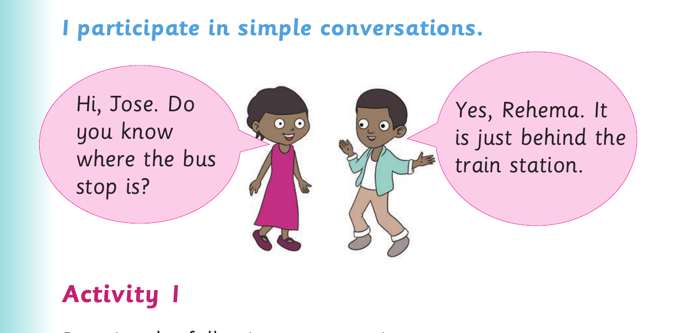

I participate in simple conversations

I participate in simple conversations. Hi, Jose. Do Yes, Rehema. It you know is just behind the where the bus train station. stop is? Activity 1
Practise the following conversation: Maiga : What is your name? Tom : My name is Tom. Maiga : How old are you?
Simple conversations - continued
Tom : I am eleven years old. Maiga : Where do you live? Tom : I live in Dar es Salaam. Maiga : What do you do? Tom : I am a pupil. Maiga : What is your favourite food? Tom : My favourite food is ugali. Maiga : What do you like to do when you are free? Tom : I like to play football. Maiga : What languages can you speak? Tom : I can speak Kiswahili, English and Nyamwezi.
Activity 2
Ask and respond to the following questions: 1. Hello, how are you doing? 2. What is your favourite football team? 3. What do you like the most at school? 4. What is your favourite drink? 5. What do you like to do when you are free?